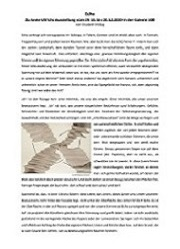
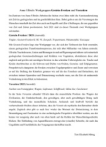
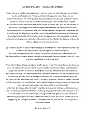
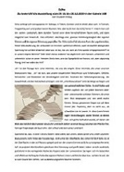
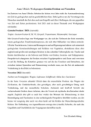
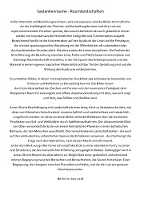
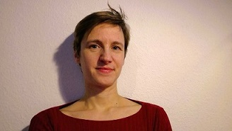

Kunst will nach draußen. Manchmal braucht Kunst auf ihrem Weg Begleitung durch Worte. Idealerweise bereichern sich Kunst und Text dabei gegenseitig. Meine Texte nähern sich neugierig und selbstbewusst den jeweiligen Werken. Dabei ist es mir wichtig, die Aufmerksamkeit für das zu öffnen, was das Kunstwerk als Kunst der Wahrnehmung neu erschließt.
Je nach Anlass, Kontext und Zielgruppe können sich die Texte in unterschiedlichen Komplexitätsgraden dem Werk nähern. Sie können dabei eher analytisch-beschreibend oder poetisch-assoziativ verfahren, und auch Teil eines gemeinsamen künstlerischen Ausdrucks werden. Ausgangspunkt und Grundlage meiner Texte ist immer das Gespräch: zwischen Dir und mir und zwischen Deinen Werken und uns.
Ich schreibe Texte für Ausstellungen, Ausstellungseröffnungsreden, Kataloge, Portfolios, Bilderläuterungen für Wettbewerbe und Websites. Gerne überarbeite ich auch bereits existierende Textentwürfe.
Schreib mir einfach ein Mail und erzähl mir, was für einen Text Du brauchst: info@elisabeth-mittag.de.
Danach können wir dann telefonisch besprechen, wie es weitergeht. Das Gespräch ist kostenlos.
Arbeitsproben
Hier kannst Du Dir einige meiner Texte anschauen.
Im Auftrag von Anne Ullrich
 
 

 
Im Auftrag von Franziska Beilfuß

Honorare
Meine Honorare variieren je nach Komplexität, Rechercheaufwand und Umfang des Textauftrags.
Nachdem Du mir Deinen Auftrag genau geschildert hast, schicke ich Dir ein individuelles Angebot per Mail, in dem alle vereinbarten Leistungen sowie der Abgabetermin genau festgehalten werden. Der angegebene Preis ist ein Pauschalpreis, der auch regelmäßige Gespräche, eventuelle Atelierbesuche und 3 Korrekturstufen beinhaltet.
Über mich
Ich wurde 1984 in Berlin geboren und bin in Heidenheim und Stuttgart zur gegangen. Weil es mich interessiert, wie Worte Sinn machen und mich die Frage beschäftigt, was Sinn eigentlich ist, habe ich Deutsche Literaturwissenschaft und Religionswissenschaft studiert. Dafür bin ich wieder zurück nach Berlin gekommen.
Seit 2013 arbeite ich mit der Künstlerin Anne Ullrich zusammen und schreibe mit Begeisterung Kunst--Texte für sie und mit ihr zusammen.
Momentan schreibe ich an meiner Dissertation zum Thema Die Problematik der Selbstrepräsentation in deutsch-jüdischen Theatertexten des frühen 20. Jahrhunderts. Außerdem arbeite ich als Dozentin für Deutsch als Zweitsprache.

Impressum
Angaben gemäß § 5 TMG
Elisabeth Mittag
Carstennstr. 7
12205 Berlin
Verantwortlich für Inhalt nach §55 RStV
Elisabeth Mittag
Kontakt:
E-Mail: info@elisabeth-mittag.de
Haftungsausschluss:
Haftung für Inhalte
Die Inhalte unserer Seiten wurden mit größter Sorgfalt erstellt. Für die Richtigkeit, Vollständigkeit und Aktualität der Inhalte können wir jedoch keine Gewähr übernehmen. Als Diensteanbieter sind wir gemäß § 7 Abs.1 TMG für eigene Inhalte auf diesen Seiten nach den allgemeinen Gesetzen verantwortlich. Nach §§ 8 bis 10 TMG sind wir als Diensteanbieter jedoch nicht verpflichtet, übermittelte oder gespeicherte fremde Informationen zu überwachen oder nach Umständen zu forschen, die auf eine rechtswidrige Tätigkeit hinweisen. Verpflichtungen zur Entfernung oder Sperrung der Nutzung von Informationen nach den allgemeinen Gesetzen bleiben hiervon unberührt. Eine diesbezügliche Haftung ist jedoch erst ab dem Zeitpunkt der Kenntnis einer konkreten Rechtsverletzung möglich. Bei Bekanntwerden von entsprechenden Rechtsverletzungen werden wir diese Inhalte umgehend entfernen.
Haftung für Links
Unser Angebot enthält Links zu externen Webseiten Dritter, auf deren Inhalte wir keinen Einfluss haben. Deshalb können wir für diese fremden Inhalte auch keine Gewähr übernehmen. Für die Inhalte der verlinkten Seiten ist stets der jeweilige Anbieter oder Betreiber der Seiten verantwortlich. Die verlinkten Seiten wurden zum Zeitpunkt der Verlinkung auf mögliche Rechtsverstöße überprüft. Rechtswidrige Inhalte waren zum Zeitpunkt der Verlinkung nicht erkennbar. Eine permanente inhaltliche Kontrolle der verlinkten Seiten ist jedoch ohne konkrete Anhaltspunkte einer Rechtsverletzung nicht zumutbar. Bei Bekanntwerden von Rechtsverletzungen werden wir derartige Links umgehend entfernen.
Urheberrecht
Die durch die Seitenbetreiber erstellten Inhalte und Werke auf diesen Seiten unterliegen dem deutschen Urheberrecht. Die Vervielfältigung, Bearbeitung, Verbreitung und jede Art der Verwertung außerhalb der Grenzen des Urheberrechtes bedürfen der schriftlichen Zustimmung des jeweiligen Autors bzw. Erstellers. Downloads und Kopien dieser Seite sind nur für den privaten, nicht kommerziellen Gebrauch gestattet. Soweit die Inhalte auf dieser Seite nicht vom Betreiber erstellt wurden, werden die Urheberrechte Dritter beachtet. Insbesondere werden Inhalte Dritter als solche gekennzeichnet. Sollten Sie trotzdem auf eine Urheberrechtsverletzung aufmerksam werden, bitten wir um einen entsprechenden Hinweis. Bei Bekanntwerden von Rechtsverletzungen werden wir derartige Inhalte umgehend entfernen.
Datenschutz
Die Nutzung unserer Webseite ist ohne Angabe personenbezogener Daten möglich.
Wir weisen darauf hin, dass die Datenübertragung im Internet (z.B. bei der Kommunikation per E-Mail) Sicherheitslücken aufweisen kann. Ein lückenloser Schutz der Daten vor dem Zugriff durch Dritte ist nicht möglich.
Der Nutzung von im Rahmen der Impressumspflicht veröffentlichten Kontaktdaten durch Dritte zur Übersendung von nicht ausdrücklich angeforderter Werbung und Informationsmaterialien wird hiermit ausdrücklich widersprochen. Die Betreiber der Seiten behalten sich ausdrücklich rechtliche Schritte im Falle der unverlangten Zusendung von Werbeinformationen, etwa durch Spam-Mails, vor.
Website Impressum erstellt durch impressum-generator.de von der Kanzlei Hasselbach